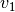
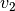
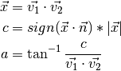

poseutils package¶
Subpackages¶
- poseutils.datasets package
- Subpackages
- poseutils.datasets.processed package
- poseutils.datasets.transformation package
- Submodules
- poseutils.datasets.transformation.CalculateMetrics module
- poseutils.datasets.transformation.CropAndScale module
- poseutils.datasets.transformation.Normalize module
- poseutils.datasets.transformation.RootCenter module
- poseutils.datasets.transformation.Transformation module
- poseutils.datasets.transformation.Unnormalize module
- Module contents
- poseutils.datasets.unprocessed package
- Submodules
- poseutils.datasets.unprocessed.Dataset module
- poseutils.datasets.unprocessed.GPADataset module
- poseutils.datasets.unprocessed.H36MDataset module
- poseutils.datasets.unprocessed.MPI3DHPDataset module
- poseutils.datasets.unprocessed.SURREALDataset module
- poseutils.datasets.unprocessed.TDPWDataset module
- Module contents
- Module contents
- Subpackages
Submodules¶
poseutils.camera_utils module¶
Most of the camera functions are taken from Zhao et al. Semantic Graph Convolution
- poseutils.camera_utils.camera_to_world_frame(P, R, T)[source]¶
Inverse of world_to_camera_frame
Args P: Nx3 points in camera coordinates R: 3x3 Camera rotation matrix T: 3x1 Camera translation parameters Returns X_cam: Nx3 points in world coordinates
- poseutils.camera_utils.load_camera_params(hf, path)[source]¶
Load h36m camera parameters
Args hf: hdf5 open file with h36m cameras data path: path or key inside hf to the camera we are interested in Returns R: 3x3 Camera rotation matrix T: 3x1 Camera translation parameters f: (scalar) Camera focal length c: 2x1 Camera center k: 3x1 Camera radial distortion coefficients p: 2x1 Camera tangential distortion coefficients name: String with camera id
- poseutils.camera_utils.load_cameras(bpath='cameras.h5', subjects=[1, 5, 6, 7, 8, 9, 11])[source]¶
Loads the cameras of h36m
Args bpath: path to hdf5 file with h36m camera data subjects: List of ints representing the subject IDs for which cameras are requested Returns rcams: dictionary of 4 tuples per subject ID containing its camera parameters for the 4 h36m cams
- poseutils.camera_utils.project_point_radial(P, R, T, f, c, k, p)[source]¶
Project points from 3d to 2d using camera parameters including radial and tangential distortion
Args P: Nx3 points in world coordinates R: 3x3 Camera rotation matrix T: 3x1 Camera translation parameters f: (scalar) Camera focal length c: 2x1 Camera center k: 3x1 Camera radial distortion coefficients p: 2x1 Camera tangential distortion coefficients Returns Proj: Nx2 points in pixel space D: 1xN depth of each point in camera space radial: 1xN radial distortion per point tan: 1xN tangential distortion per point r2: 1xN squared radius of the projected points before distortion
poseutils.common module¶
- poseutils.common.calc_angle_360(v1, v2, n)[source]¶
Calculates the angle within 360 degrees between two vectors  and  around normal
 .
.
- Parameters
v1 (numpy.ndarray) – Vector Nx1 or 1xN
v2 (numpy.ndarray) – Vector Nx1 or 1xN
n (numpy.ndarray) – Vector Nx1 or 1xN
- Returns
Angle in degrees
- Return type
float
poseutils.composite module¶
- poseutils.composite.scale_into_bounding_box_2d(joints, low=0, high=256)[source]¶
Composite function to do cropping and scaling in one routine. Given an array of joint positions, it first extracts bounding box information. Then uses it to scale up/down in range [low, high] while preserving aspect ratio.
- Parameters
joints (numpy.ndarray) – Positions of joints (NxMx2), where M = 14 or 16
low (int, optional) – Lowest coordinate of the bounding box, defaults to 0
high (int, optional) – Highest coordinates of the bounding box, defaults to 256
- Returns
Scaled joint positions (NxMx2), where M = 14 or 16
- Return type
numpy.ndarray
poseutils.constants module¶
- poseutils.constants.NAMES_14¶
- Edge/bone names for 14 joint configuration
- poseutils.constants.NAMES_16¶
- Edge/bone names for 16 joint configuration
- poseutils.constants.EDGES_14¶
- Edge list for 14 joint configuration
- poseutils.constants.LEFTS_14¶
- Left side indices of the skeleton for 14 joint configuration
- poseutils.constants.RIGHTS_14¶
- Right side indices of the skeleton for 14 joint configuration
- poseutils.constants.EDGES_16¶
- Edge list for 16 joint configuration
- poseutils.constants.LEFTS_16¶
- Left side indices of the skeleton for 16 joint configuration
- poseutils.constants.RIGHTS_16¶
- Right side indices of the skeleton for 16 joint configuration
- poseutils.constants.EDGE_NAMES_16JNTS¶
- Edge/bone names for 16 joint configuration
- poseutils.constants.EDGE_NAMES_14JNTS¶
- Edge/bone names for 14 joint configuration
- poseutils.constants.adjacency_list(n_jnts)[source]¶
Returns a adjacency list arranged in parent -> [children list] format either 14 or 16 joint configuration.
- Parameters
n_jnts (int) – Number of joints, either 14 or 16
- Raises
ValueError – If any other joint configuration is requested
- Returns
Adjacency list (n_jnts, [])
- Return type
list(list(int))
- poseutils.constants.dataset_indices(dataset_name, n_jnts)[source]¶
Returns either 14 or 16 joint configuration indices for specified dataset. Supports h36m, gpa, 3dpw, surreal, 3dhp. It returns indices to pick from the full dataset and rearrange them to ensure consistency.
- Parameters
dataset_name (str) – Name of the dataset. Supports h36m, gpa, 3dpw, surreal, 3dhp
n_jnts (int) – Number of joint configuration to return. Either 14 or 16.
- Raises
ValueError – If the dataset name provided is not supported.
- Returns
to_select: List of selection indices [n_jnts]
to_sort: List of sorting order [n_jnts]
- Return type
tuple(list(int), list(int))
poseutils.logger module¶
poseutils.metrics module¶
- poseutils.metrics.calculate_jpe(pred, target)[source]¶
Given prediction and ground truth 3d position calculates joint position error.
- Parameters
pred (numpy.ndarray) – Predicted 3d joint positions (NxMx3), where M = 14 or 16
target (numpy.ndarray) – Ground truth 3d joint positions (NxMx3), where M = 14 or 16
- Returns
MPJPE: Mean per joint position error
PJPE: Per joint position error (Mx1)
PPJPE: Per point joint position error (Nx1)
- Return type
tuple(float, numpy.ndarray, numpy.ndarray)
poseutils.props module¶
poseutils.transform module¶
- poseutils.transform.normalize_skeleton(joints)[source]¶
Normalizes joint positions (NxMx2 or NxMx3, where M is 14 or 16) from parent to child order. Each vector from parent to child is normalized with respect to it’s length.
- Parameters
joints (numpy.ndarray) – Position of joints (NxMx2) or (NxMx3)
- Returns
Normalzed position of joints (NxMx2) or (NxMx3)
- Return type
numpy.ndarray
- poseutils.transform.normalize_torso_2d(torso)[source]¶
Takes in the torso coordinates and normalizes it. Takes the distance of each torso joint from the Right Hip joint position. Each distance is then normalized with the distance along the diagonal connecting Right Hip to Left Shoulder. A small value is added to the diagonal distance to avoid divide-by-zero error.
- Parameters
torso (numpy.ndarray) – Torso joint positions (Nx4x2), with arranged in order: Right Hip, Left Hip, Left Shoulder, Right Shoulder
- Returns
New torso positions (Nx4x2)
Width of right hip to left hip, right hip to left shoulder, right hip to right shoulder (Nx3)
List of names of the widths
- Return type
tuple(numpy.narray, numpy.ndarray, list(str))
- poseutils.transform.normalize_zscore(X, mean, std, skip_root=False)[source]¶
Normalize position of joints using z-score normalization. Subtracts mean and divides by standard devation. Metrics are ideally collected from the training set.
- Parameters
X (numpy.ndarray) – Position of joints (NxMx2) or (NxMx3)
mean (numpy.ndarray) – Mean joint position (Mx2) or (Mx3)
std ([type]) – Standard deviation of joint positions (Mx2) or (Mx3)
skip_root (bool, optional) – Whether to skip over the root/hip when normalizing, defaults to False
- Returns
New position of joints (NxMx2) or (NxMx3)
- Return type
numpy.ndarray
- poseutils.transform.root_center(X, root_idx=0)[source]¶
Subtract the value at root index to make the coordinates center around root. Useful for hip-centering the skeleton.
- Parameters
X (numpy.ndarray) – Position of joints (NxMx2) or (NxMx3)
root_idx (int, optional) – Root/Hip index, defaults to 0
- Returns
New position of joints (NxMx2) or (NxMx3)
- Return type
numpy.ndarray
- poseutils.transform.scale_bounding_area_to(X, bbox, low=0, high=256)[source]¶
Scales up or down the bounding box enclosed region to fit in a (high-low) sided square while preserving aspect ratio.
- Parameters
X (numpy.ndarray) – Position of joints (NxMx2)
bbox (numpy.ndarray) – Bounding box coordinates (Nx4) where columns are stacked as [lx, ly, rx, ry]. (lx, ly) is the coordinate for top-left corner whereas (rx, ry) is the coordinate of the bottom-right corner
low (int, optional) – Lowest value of the bounding box, defaults to 0
high (int, optional) – Highest value of the bounding box, defaults to 256
- Returns
New position of joints (NxMx2)
- Return type
numpy.ndarray
- poseutils.transform.unnormalize_zscore(X, mean, std, skip_root=False)[source]¶
Reverses normalized position of joints using z-score normalization. Multiplies by standard devation and adds the mean. Metrics are ideally collected from the training set.
- Parameters
X (numpy.ndarray) – Position of joints (NxMx2) or (NxMx3)
mean (numpy.ndarray) – Mean joint position (Mx2) or (Mx3)
std ([type]) – Standard deviation of joint positions (Mx2) or (Mx3)
skip_root (bool, optional) – Whether to skip over the root/hip when unnormalizing, defaults to False
- Returns
New position of joints (NxMx2) or (NxMx3)
- Return type
numpy.ndarray
poseutils.view module¶
- poseutils.view.draw_axes(R, t, ax, scale=0.5)[source]¶
Draw xyz axes centered at a position.
- Parameters
R (numpy.ndarray) – Rotation matrix (3,3) with columns representing xyz columns respectively
t (numpy.ndarray) – Position t (3,) acting as the origin of the xyz axes
ax (matplotlib.pyplot.subplot) – Matplotlib subplot reference
scale (float, optional) – To scale up the axes, defaults to 0.5
- poseutils.view.draw_bounding_box(lx, ly, rx, ry, ax)[source]¶
Draws bounding box
- Parameters
lx (numpy.ndarray) – X coordinates (Nx1) for top-left corner of the box
ly (numpy.ndarray) – Y coordinates (Nx1) for top-left corner of the box
rx (numpy.ndarray) – X coordinates (Nx1) for bottom-right corner of the box
ry (numpy.ndarray) – Y coordinates (Nx1) for bottom-right corner of the box
ax (matplotlib.pyplot.subplot) – Matplotlib subplot reference
- poseutils.view.draw_skeleton(pose, ax, jnts_14=True)[source]¶
Draws a skeleton from joints
- Parameters
pose (numpy.ndarray) – Joint positions either 2d (Nx2) or 3d (Nx3) where N = 14 or 16
ax (matplotlib.pyplot.subplot) – Matplotlib subplot reference
jnts_14 (bool, optional) – Flag to specify whether to use 14 joint (True) or 16 joint (False) configuration, defaults to True